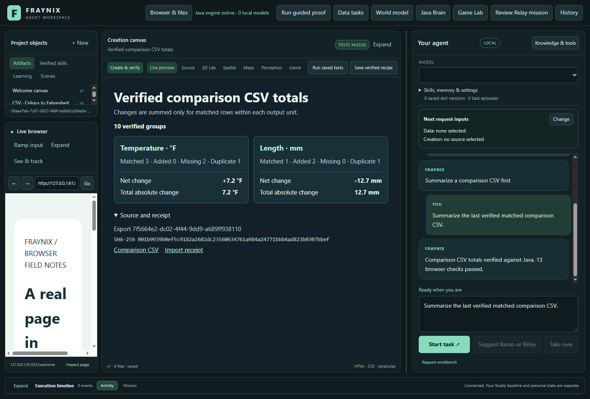

Use a verified comparison CSV in a follow-on Chat task
Attach a verified matched comparison CSV from the project and calculate changes separately by output unit. Check the receipt and original sources again after restart.

The desktop calculates temperature and length changes in separate groups
The original import passes a fresh check after desktop restart
System files
Open source